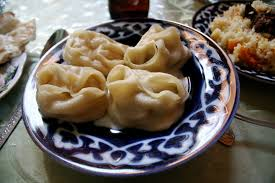

Manty (Steamed Dumplings) Recipe
Home

Description
Turkmen manty are traditional steamed dumplings usually filled with minced meat,
onions, and simple seasonings. They are a hearty and well-loved dish in Turkmen cuisine, often served hot with sour
cream, butter, or sauce.
Ingredients
- Flour
- Water
- Minced beef
- Onion
- Potatoes (optional)
- Water
- Salt
- Ground black pepper
Steps
- Prepare the dough by mixing flour, water, and salt, then let it rest.
- Make the filling with minced meat, chopped onions, and seasonings.
- Roll out the dough, cut it into squares, and place filling in the center of each piece.
- Fold and seal the dumplings, then steam them until fully cooked.